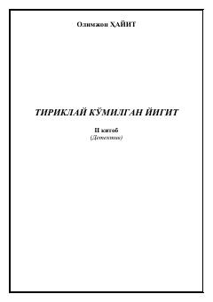

TKQabristonda topilgan sirli jasad va uning ortidagi fojiali haqiqatlar ochiladi.
Ushbu asar detektiv janrida yozilgan bo'lib, qabristonda topilgan noma'lum jasad va uning atrofidagi sirli voqealar haqida hikoya qiladi. Obidjon ismli yigit o'z tog'asi Madalining o'limi va qabr bilan bog'liq shubhali holatlarni tekshirishga kirishadi.